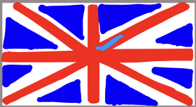

Abkhasia

Afghanistan

Albania

Algerie

Andorra

Angola

Antigua og Barbuda

Argentina

Armenia

Aserbajdsjan

Østerrike

Australia

Øst-Timor

Bahamas

Bahrain

Bangladesh

Barbados

Belarus

Belgia

Belize

Benin

Bhutan

Bolivia

Bosnia og Hercegovina

Botswana

Brasil

Britania

Brunei

Bulgaria

Burkina Faso

Burundi

Canada

Chile

Colombia

Costa Rica

Cuba

Danmark

De forente arabiske emirater

Den dominikanske republikk

Den sentralafrikanske republikk

Djibouti

Dominica

Ecuador

Egypt

Ekvatorial-Guinea

Elfenbenskysten

El Salvador

Eritrea

Estland

Eswatini

Etiopia

Fiji

Filippinene

Finland

Frankrike

Gabon

Gambia

Georgia

Ghana

Grenada

Guatemala

Guinea

Guinea-Bissau

Guyana

Haiti

Hellas

Honduras

India

Indonesia

Irak

Iran

Irland

Island

Israel

Italia

Jamaica

Japan

Jemen

Jordan

Kambodsja

Kamerun

Kapp Verde

Kasakhstan

Kenya

Kina

Kyrgyzstan

Kiribati

Komorene

Den demokratiske republikken Kongo

Republikken Kongo